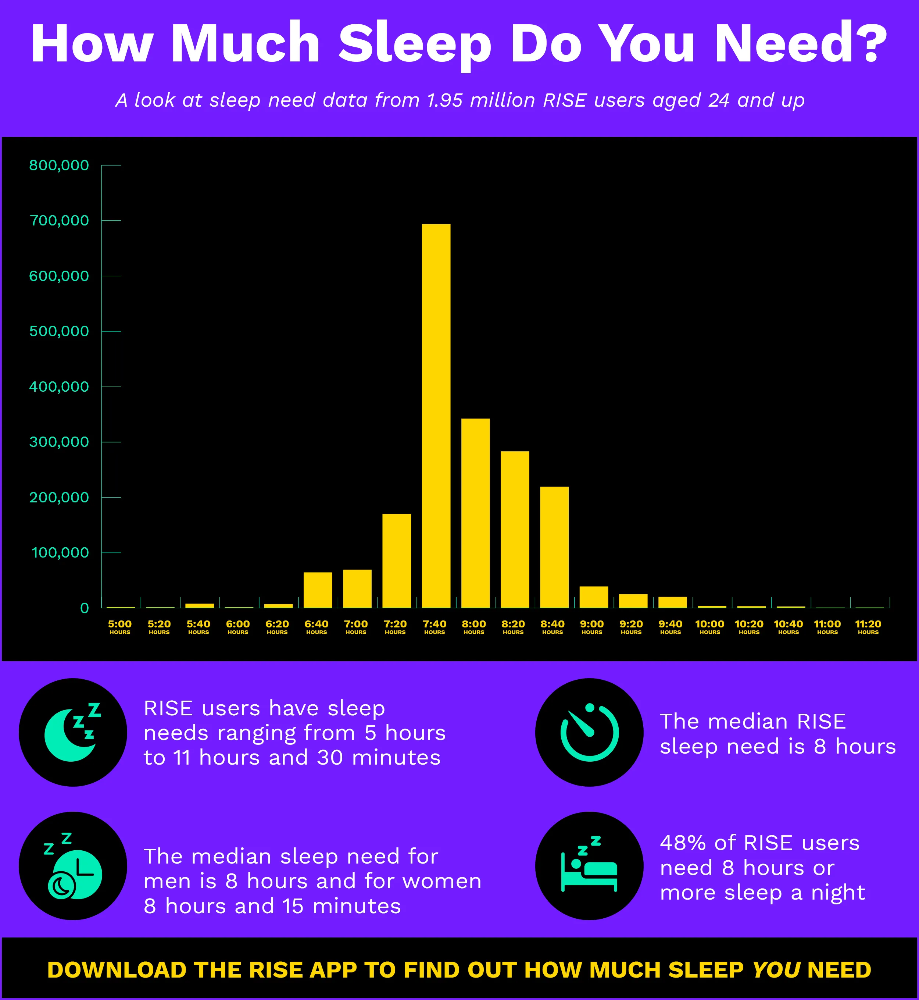

Sleep Debt Forgiveness: A Realistic Plan (Not "Just Sleep More")

"I'll catch up on sleep when I'm dead." — another text from my brother.
He sends me this at least once a month. He thinks it's funny. I think it's the reason he's sick all the time. My brother is forty-two, works in finance, and treats sleep like a luxury he can't afford. He's been running on five to six hours for probably fifteen years. He has high blood pressure, chronic heartburn, and the emotional range of a hangry toddler. But he's "fine."
When I first calculated my sleep debt a few years ago, I thought about my brother. His debt must be astronomical. And the standard advice — "just sleep more" — is useless for someone like him. He can't just sleep more. He has deadlines, kids, a commute. So I started thinking about what a realistic sleep debt repayment plan looks like. Not for perfect people with perfect schedules. For actual humans.
Here's the thing about sleep debt. You can't erase it in a weekend. If you owe twenty hours, sleeping twelve hours on Saturday will make you feel worse, not better. You'll be groggy, disoriented, and you'll mess up your circadian rhythm for the next week. The only way to pay down debt is slowly and consistently.
A woman named Vanessa came to me. She was a single mom, worked as a waitress, and slept about five hours per night for years. Her debt was around twenty hours per week. She came to me because she was falling asleep at red lights. That's dangerous. She needed a plan, not a lecture.
We started by measuring her actual debt. She used the sleep debt tracker for two weeks.
Her average was five point two hours of sleep per night. Her target was seven point five — she felt best at seven point five in a previous experiment. That's two point three hours of debt per night, sixteen point one hours per week. That's not debt. That's bankruptcy.
I told her: we're not going to try to repay all sixteen hours. That would take months and she'd give up. Instead, we're going to focus on getting her out of the red zone. The red zone is when you're so sleep-deprived that your reaction time is impaired, your immune system is suppressed, and your mood is unstable. For Vanessa, that was anything over ten hours of weekly debt. Our goal was to get her below ten hours.
Here's the plan we made. Week one: add fifteen minutes of sleep per night. That's it. Go to bed fifteen minutes earlier. No other changes. That's about one point seven five extra hours for the week. Week two: add another fifteen minutes if possible. If not, hold steady. Week three: take a ninety-minute nap on her day off — she had Wednesdays off. Not a twenty-minute nap. A full ninety-minute cycle nap. Week four: reassess.
We used the nap planner to time her day-off nap.
The planner told her to nap at 1 PM for ninety minutes. She did. She woke up feeling weird — ninety-minute naps are disorienting at first — but she said her energy that evening was better than it had been in months.
After four weeks, Vanessa's average sleep was up to six point one hours per night. Her weekly debt had dropped from sixteen hours to about ten. She was still tired, but she wasn't falling asleep at red lights anymore. She said "I feel like I'm not drowning. Just wading." That's progress.
We kept going. Month two: add another fifteen minutes per night — now at six point five hours average — plus a second nap on Sunday. Month three: she hit seven hours average. Weekly debt down to three point five hours. She said "I didn't know I could feel like this." She wasn't jumping out of bed singing. But she stopped feeling like death.
The point of Vanessa's story is that debt repayment is slow and boring. There's no magic bullet. You can't "sleep bank" before a busy week — that doesn't work. You can only pay down debt after you've incurred it. And you pay it down in small increments.
Now, what about the idea that you can't ever repay sleep debt? Some studies suggest that chronic sleep debt might cause permanent damage. I'm not sure. The research is mixed. What I know from working with clients is that people can feel dramatically better even if they don't fully repay their debt. Getting from sixteen hours of weekly debt to ten hours makes a huge difference in mood, energy, and safety. Getting from ten to five makes another big jump. Getting from five to zero might not feel that different. So don't obsess about zero. Aim for "good enough."
Here's a realistic repayment schedule for different debt levels.
If your weekly debt is three to five hours: Add fifteen minutes to your sleep per night for two weeks. That's it. You'll be at zero.
If your weekly debt is six to ten hours: Add twenty minutes per night for three weeks, plus one ninety-minute nap on the weekend. That should get you to zero or near zero.
If your weekly debt is eleven to fifteen hours: Add thirty minutes per night for four weeks, plus two ninety-minute naps on the weekend. This is hard. You might need to adjust your schedule significantly. But it's worth it.
If your weekly debt is over fifteen hours: See a doctor. Seriously. At this level, you're at risk for serious health problems. There might be an underlying issue like sleep apnea or a circadian rhythm disorder that needs medical treatment. Don't try to fix this on your own.
Now, here's a critical point. Don't try to repay debt by sleeping in on weekends. Weekend sleeping in gives you social jet lag. You'll feel better on Sunday but worse on Monday. The debt repayment needs to happen on weeknights, not just weekends.
A guy named Kevin tried to repay his debt by sleeping ten hours on Saturday and Sunday. His weekly debt was eight hours. He did this for a month. His Monday mornings were brutal. He couldn't figure out why. I showed him his sleep log: his bedtime on Friday and Saturday was 2 AM, then he slept until noon. His circadian rhythm was completely confused. On Sunday night, he couldn't fall asleep until 1 AM. Monday was a disaster.
We switched to a weeknight-only repayment plan. He added thirty minutes to his Monday-Thursday sleep by going to bed earlier. He kept his weekend schedule the same — but not later than 1 AM. Within two weeks, his Monday morning grogginess disappeared. Because his body wasn't being yanked between two time zones anymore.
If you need help finding an earlier bedtime that still aligns with your cycles, use the bedtime finder.
The bedtime finder helped Kevin find a 11 PM bedtime that worked with his natural rhythm. He had been going to bed at 12:30 AM. The ninety-minute shift was too much to do at once, so we did it in fifteen-minute increments over two weeks. By the end, he was falling asleep at 11 PM without struggle.
One more thing about debt forgiveness. Your brain doesn't distinguish between "debt from last week" and "debt from last year." It just keeps a running total. So if you've been sleep-deprived for years, you're not starting from zero. But you can still make progress. The first week of repayment might not feel great. You might be tired because you're going to bed earlier than usual. Push through. By week two, your body will adjust.
A woman named Maria had been sleep-deprived for a decade. She was a real estate agent, always on call, always stressed. Her debt was probably fifty-plus hours weekly — she wasn't even tracking because it was too painful. She didn't believe she could ever feel rested. We started with the smallest possible change: ten minutes earlier bedtime. That's it. One month later, she said "I think I feel a tiny bit better." Then we added another ten minutes. Over six months, she added an hour of sleep per night. Her debt went from catastrophic to manageable. She said "I forgot what it felt like to not be exhausted."
So here's my challenge to you. Don't try to fix everything. Pick one small change. Go to bed fifteen minutes earlier tonight. Do that for a week. Then check your debt. I bet it's lower. And I bet you feel a little better.
P.S. My brother finally listened to me. He started going to bed twenty minutes earlier. He said he feels less angry in the mornings. That's not nothing. He still sends me the "I'll sleep when I'm dead" text. But now he adds a winking emoji. Progress.